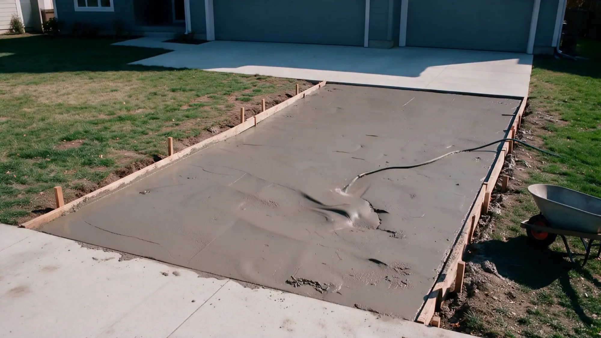
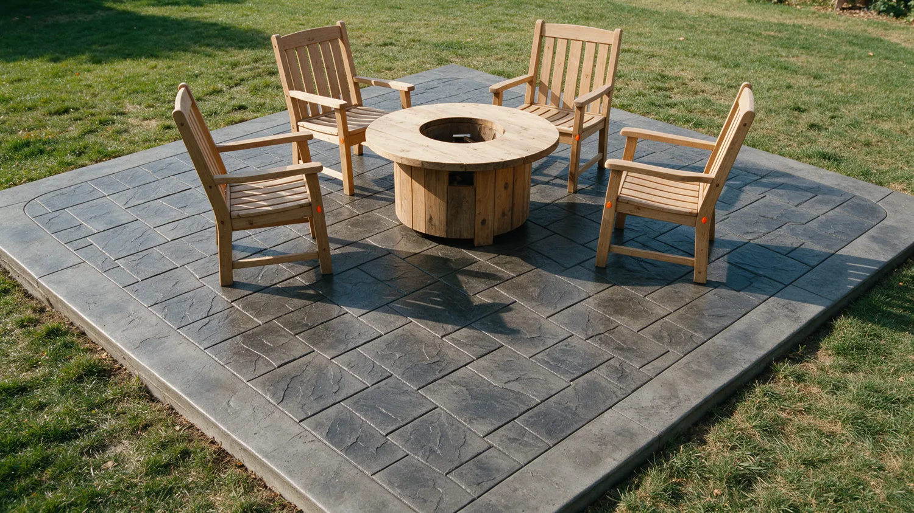

Concrete doesn't do second chances.
Prescott Concrete Crafters LLC does new concrete, replacements and repairs in Prescott and Prescott Valley. Done right, the first time.
A truck of concrete gives you about ninety minutes.
Then it starts to set. No undo. No second pour.
Skip the prep, add a little water, rush the finish, and you'll see it in the cracks for years.
This is not a weekend project.


The rushed driveway
Water on the base, a hose in the form.
A wet, loose base settles. The slab on top of it follows.
Soupy mix, poured fast.
Extra water makes concrete easy to place and much weaker once it cures.
Then the cracks show up.
No steel, no planned joints, so the slab picks its own places to break.
And then comes the teardown bill.
Breaking out and re-pouring costs more than doing it right once.

Same driveway. Which crew do you want?


The right way
Same job. Done by pros.
- Compacted gravel base, graded to drain
- Rebar on chairs, so steel sits where it belongs
- Mix ordered for the job. No water added on site
- Placed, screeded and floated on schedule
- Joints cut and the slab cured, not left to chance
Poured right. On schedule.
- BBB Accredited, A+ rating
- 5.0 stars on Google (4 reviews)
- Serving Prescott and Prescott Valley
What we pour.
Pick a service to see what the work involves.
New concrete construction
New pours for pads, flatwork and slabs, built on a prepared base.
See how we do itConcrete replacement
Old concrete broken out and replaced, with the base fixed first.
See how we do itConcrete repair
Cracked or damaged concrete, fixed where it can be saved.
See how we do itDriveways
New and replacement driveways, graded so water leaves.
See how we do itPatios and walkways
Patios, walks and paths for the yard and the front door.
See how we do itSlabs and foundations
Slabs on grade for outbuildings, barns, shops and additions.
See how we do itNot sure which one you need?
What we build.
Example photos.



How we keep it honest.
Concrete is hard to judge until it's too late to change. So we put the important parts in front of you early.
-
Shows up when he says.
A Google reviewer wrote that Jeremy arrived when he said he would.
-
Easy to reach.
A Google reviewer described Jeremy as responsive and easy to work with.
-
A fair price.
A Google reviewer called the price on a barn pad very reasonable.
-
You deal with the owner.
BBB lists Jeremy Hawker as the owner, and the reviews are all about working with Jeremy directly.
Owner-run concrete in Prescott.
Prescott Concrete Crafters LLC is owned by Jeremy Hawker. BBB lists the business as started in 2021 and BBB Accredited since 2022, with an A+ rating.
The work on their Google listing is barn pads, patios, walkways and driveways around Prescott.
- Owner
- Jeremy Hawker
- Business started
- 2021 (per BBB)
- BBB
- Accredited, A+ rating
Where we work.
Serving Prescott and Prescott Valley and the towns around it.
- Prescott
- Prescott Valley
Not on the list? Call and ask.
Call (928) 899-5134What customers say.
Hover a bubble to read it.Tap a bubble to read it.
5.0 average from 4 reviews. Read them on Google
Jeremy, from Prescott Concrete Crafters, did an excellent job with the concrete pad for our new barn. He was professional and arrived when he said he would. The work was completed in a short amount of time and it looks great. The price was very reasonable on top of everything. We couldn't be happier!
Jeremy did an excellent job with our concrete patio and walkways. He is responsive, easy to work with, and did exactly what he said he would do in a timely and efficient manner. I would highly recommend Jeremy to others in need of any concrete work.
Jeremy, thanks for the excellent job on our driveway. Always on time and the job came out EXCELLENT!!
Booking is simple.
-
Call or send the form
Tell us what you want poured and where.
-
Talk it through
Go over the site, access and drainage.
-
Agree the details
Price, scope and schedule before work starts.
-
Pour and finish
Prep, forms, pour, finish, cure. Then a walkthrough.
Questions we hear a lot.
How long until I can walk or drive on new concrete?
Most slabs take foot traffic after a day or two. Cars and light trucks usually wait about a week. Concrete keeps gaining strength for roughly 28 days, and cold weather slows it.
Can concrete be poured in Prescott's winter?
Yes, with protection. Concrete cannot be allowed to freeze while it is young, so very cold nights can delay a pour. Ask about timing when you call.
Why does concrete flake or crack here?
Prescott sits at about 5,400 feet and freezes and thaws many times a winter. Water in small cracks expands as it freezes. Good drainage and the right curing reduce the damage.
Do I need a permit?
It depends on the job and the jurisdiction: the City of Prescott, the Town of Prescott Valley and Yavapai County each have their own rules. Slabs for buildings almost always need one.
Should I use ice melter on new concrete?
Avoid salt-based ice melters, especially in the first winters. They speed up surface flaking. Sand gives grip without the damage.
How do I get an estimate?
Call (928) 899-5134 or use the form. Describe the job and where it is.